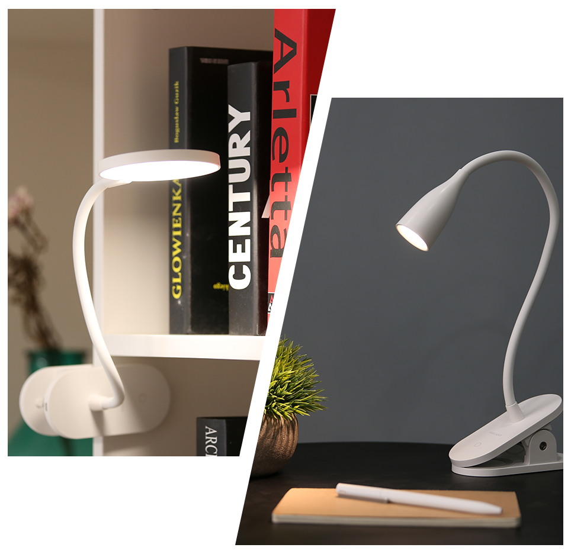
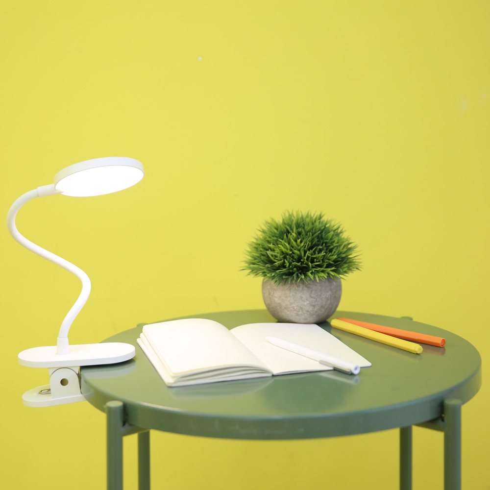
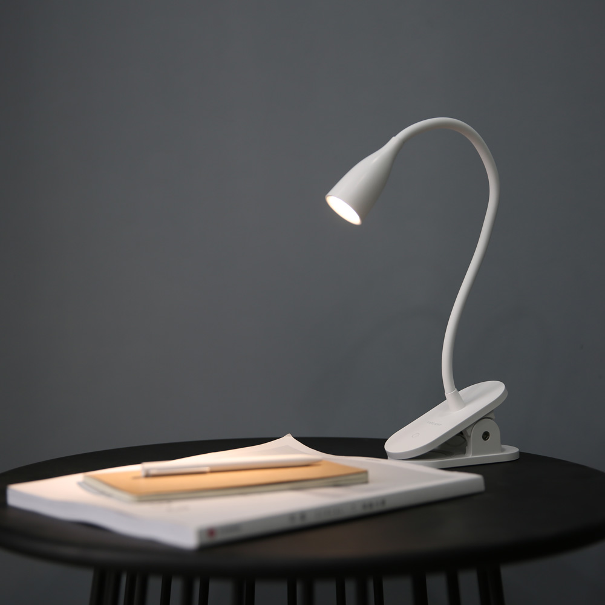
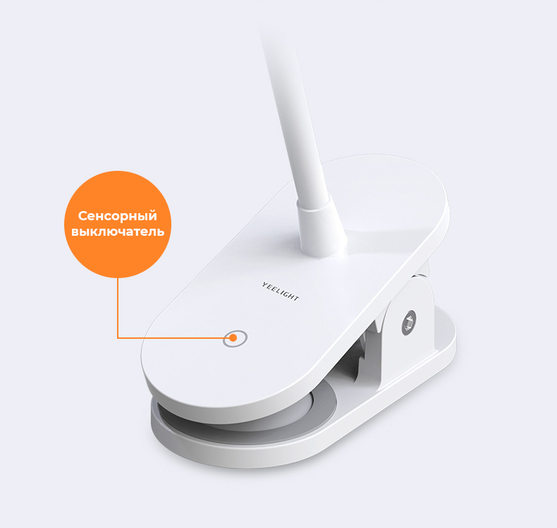
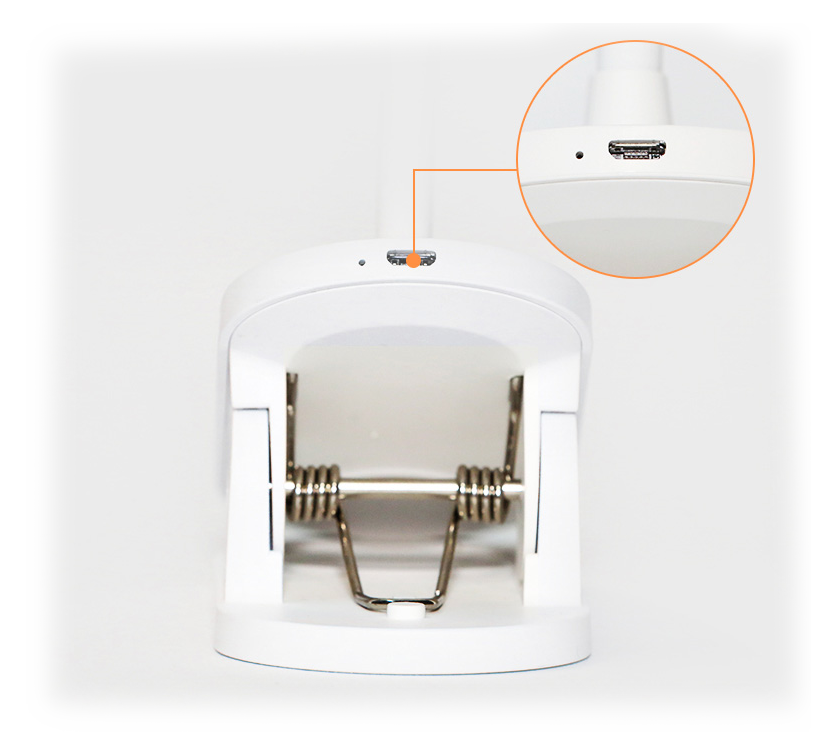

<div class="row clamp">
    <div class="col-xs-12 col-sm-12 col-md-10 col-md-offset-1 col-lg-8 col-lg-offset-2 content">

        <section class="row clamp_content_1">
            <div class="col-xs-12 col-sm-6 col-md-6 col-lg-6">
                <div class="text">
                    <h1>Yeelight Rechargeable Desk Clamp Lamp J1</h1>
                    <h2>Настольные лампы с&nbsp;аккумулятором и&nbsp;зажимом</h2>
                    <p>Направленный или рассеяный свет | Удобный зажим | Аккумулятор | Гибкая ножка</p>
                </div>
            </div>
            <div class="col-xs-12 col-sm-6 col-md-6 col-lg-6">
                
            </div>
        </section>

        <section class="row clamp_content_2">
            <div class="col-xs-12 col-sm-12 col-md-6 col-md-push-6 col-lg-6 col-lg-push-6" style="padding: 0">
                <div class="text">
                    <h2>Yeelight Clip on Lamp J1 Pro</h2>
                    <p>Светильник оснащён массивной прищепкой с прорезиненной внутренней поверхностью для лучшего
                        сцепления с мебелью. Он легко крепиться к плоским поверхностям с толщиной 15&ndash;45&nbsp;мм.
                    </p>
                    <p>Yeelight Clip on Lamp J1 работает от аккумулятора. Вам не придётся думать, где подключить лампу,
                        чтобы дотянуться вилкой до розетки. Ещё один приятный момент — гибкая ножка, которая примет
                        любую форму по вашему желанию. Световой поток всегда будет направлен куда требуется.</p>
                </div>
            </div>
            <div class="col-xs-12 col-sm-12 col-md-6 col-md-pull-6 col-lg-6 col-lg-pull-6"
                style="padding: 0; font-size: 0;">
                </div>
        </section>


        <section class="row clamp_content_3">
            <div class="col-xs-12 col-sm-12 col-md-6 col-lg-6" style="padding: 0">
                <div class="text">
                    <h2>Yeelight Clip on Lamp J1 Spot</h2>
                    <p>Настольная лампа Yeelight Clip on Lamp J1 Spot направит поток яркого света на рабочую поверхность
                        и создаст комфортные условия для любой деятельности. При компактных размерах она даёт большие
                        возможности для использования.</p>
                    <p>Благодаря зажиму и нескользящему основанию, светильник одинаково хорошо работает и крепко
                        держится на вертикальной и горизонтальной поверхности.</p>
                </div>
            </div>
            <div class="col-xs-12 col-sm-12 col-md-6 col-lg-6" style="padding: 0; font-size: 0;"></div>
        </section>

        <section class="row clamp_content_2">
            <div class="col-xs-12 col-sm-12 col-md-6 col-md-push-6 col-lg-6 col-lg-push-6" style="padding: 0">
                <div class="text">
                    <h2>Сенсорный переключатель</h2>
                    <p>Изменяйте режим работы лампы простым прикосновением. Доступно 2 режима работы: интенсивное
                        освещение, средняя яркость, режим ночника.</p>
                    <p>Подберите оптимальный режим для работы за ноутбком, чтения, или приглушенный свет ночника.</p>
                </div>
            </div>
            <div class="col-xs-12 col-sm-12 col-md-6 col-md-pull-6 col-lg-6 col-lg-pull-6"
                style="padding: 0; font-size: 0;">
                </div>
        </section>

        <section class="row clamp_content_4">
            <div class="col-xs-12 col-sm-12 col-md-12 col-lg-12 align-center" style="padding: 0;">
                <div class="text">
                    <h2>Встроенный аккумулятор и зарядка от USB</h2>
                    <p>Лампа имеет встроенный литиевый аккумулятор емкостью 1500 мАч, благодаря чему лампа может
                        работать до 50 часов от одной зарядки, в зависимости от выбранного режима.</p>
                </div>
                
            </div>
        </section>

        <section class="row clamp_content_11">
            <div class="col-sm-12 col-md-12 col-lg-12" style="padding: 0">
                
                <table class="table">
                    <thead>
                        <tr>
                            <th colspan="2">Характеристики</th>
                        </tr>
                    </thead>
                    <tbody>
                        <tr>
                            <td>Модель</td>
                            <td>YLTD12YL (Pro) / YLTD07YL (Spot)</td>
                        </tr>
                        <tr>
                            <td>Цвет</td>
                            <td>белый</td>
                        </tr>
                        <tr>
                            <td>Размеры</td>
                            <td>123 х 59 х 442 мм</td>
                        </tr>
                        <tr>
                            <td>Время работы</td>
                            <td>до 7 дней (при использовании до 20 минут в день)</td>
                        </tr>
                        <tr>
                            <td>Световой поток</td>
                            <td>100 лм</td>
                        </tr>
                        <tr>
                            <td>Цветовая температура</td>
                            <td>3700К</td>
                        </tr>
                        <tr>
                            <td>Аккумулятор</td>
                            <td>1500 мАч</td>
                        </tr>
                        <tr>
                            <td>Материал</td>
                            <td>пластик</td>
                        </tr>
                    </tbody>
                </table>
            </div>
        </section>
    </div>
</div>